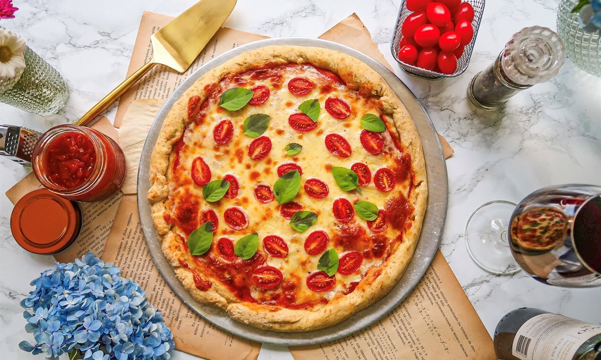
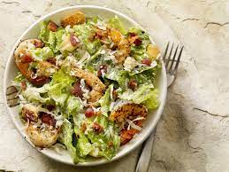

Durante a pandemia global, a cozinha emergiu como um refúgio e uma âncora nas vidas das pessoas, desempenhando um papel fundamental em nossa jornada através de tempos difíceis. O ato de cozinhar, que costumava ser apenas uma parte comum da rotina diária, ganhou uma nova e profunda importância, afetando positivamente nossa saúde física, mental e emocional.
Com o distanciamento social e as restrições de movimento, muitos de nós nos viram em casa por períodos prolongados, longe dos restaurantes e da comida pronta. Isso nos levou a redescobrir nossas cozinhas e, com isso, uma série de benefícios surpreendentes.
Em primeiro lugar, a cozinha se tornou uma terapia. O ato de escolher ingredientes, preparar uma receita e saborear a recompensa proporcionou uma sensação de realização e controle em um mundo incerto. A concentração exigida na cozinha permitia que as pessoas temporariamente deixassem de lado as preocupações externas, aliviando o estresse e a ansiedade que a pandemia trouxe.
Além disso, cozinhar em casa promoveu hábitos alimentares mais saudáveis. Com mais tempo para planejar refeições e acesso a ingredientes frescos, muitos optaram por opções mais equilibradas e nutritivas. Isso não apenas contribuiu para uma melhor saúde física, mas também para o fortalecimento do sistema imunológico, uma consideração crucial em tempos de pandemia.
A cozinha também se tornou um ponto de encontro virtual. Com o distanciamento social, as pessoas compartilhavam receitas e dicas de culinária online, criando uma comunidade culinária global. Live streams de chefs e programas de culinária se multiplicaram, permitindo que as pessoas aprendessem novas habilidades e se inspirassem na cozinha.
Além disso, cozinhar em casa trouxe economia financeira. Com a incerteza econômica causada pela pandemia, preparar refeições em casa se tornou uma alternativa mais acessível e econômica do que pedir comida ou comer em restaurantes.
Por fim, a cozinha fortaleceu laços familiares. Muitas famílias passaram mais tempo juntas na cozinha, envolvendo-se em atividades colaborativas como fazer pão, cozinhar refeições especiais e experimentar receitas de diferentes culturas. Isso não apenas fortaleceu os relacionamentos, mas também criou memórias duradouras.
Em resumo, cozinhar durante a pandemia transcendeu a simples preparação de alimentos. Tornou-se um ato terapêutico, saudável, econômico e socialmente conectado. Foi uma demonstração de resiliência e adaptabilidade em tempos desafiadores, mostrando que, mesmo diante da adversidade, podemos encontrar conforto e alegria em nossas cozinhas. A pandemia nos ensinou que, independentemente das circunstâncias, a cozinha é um refúgio seguro onde podemos alimentar tanto nossos corpos quanto nossas almas.
Pão Caseiro:
Com o aumento do tempo livre em casa, muitas pessoas redescobriram o prazer de fazer pão caseiro. Receitas simples de pão, como pão de fermentação natural, pão de banana ou pão de forma, ganharam popularidade. Fazer pão em casa não só é satisfatório, mas também proporciona um pão fresco e saboroso.

Abaixo segue a receita para você fazer em casa:
Ingredientes:
- 500g de farinha de trigo
- 10g de sal
- 350ml de água morna
- 1 colher de sopa de açúcar (opcional, para ajudar na ativação do fermento)
Instruções:
- Misture a água morna e o fermento em um recipiente e adicione o açúcar (se estiver usando). Deixe descansar por cerca de 5-10 minutos até que a mistura fique espumosa.
- Em uma tigela grande, misture a farinha e o sal. Faça um buraco no centro e despeje a mistura de fermento.
- Misture até formar uma massa. Sove a massa em uma superfície enfarinhada por cerca de 10 minutos até que fique elástica e suave.
- Coloque a massa de volta na tigela, cubra com um pano úmido e deixe descansar em um local morno por 1-2 horas, ou até que a massa dobre de tamanho.
- Pré-aqueça o forno a 220°C. Coloque uma panela resistente ao calor (como uma panela de ferro fundido) no forno enquanto ele pré-aquece.
- Retire a panela quente do forno e coloque a massa dentro. Cubra com uma tampa ou papel alumínio.
- Asse por 30 minutos com a tampa, depois retire a tampa e asse por mais 10-15 minutos, ou até que o pão fique dourado.
Pizza Caseira:
Fazer pizza em casa se tornou uma atividade divertida e deliciosa durante a pandemia. As pessoas experimentaram diversas coberturas e estilos de massa, desde a clássica pizza italiana até opções mais criativas. A pizza caseira permite a personalização completa e pode ser uma ótima atividade em família.

Abaixo segue a receita para você fazer em casa:
Ingredientes:
- 1 e 1/2 xícaras de farinha de trigo
- 1 colher de chá de açúcar
- 1 colher de chá de sal
- 1 colher de chá de fermento biológico seco
- 1/2 xícara de água morna
- 1 colher de sopa de azeite de oliva
- Molho de tomate
- Queijo mozzarella ralado
- Ingredientes de sua escolha (por exemplo, pepperoni, cogumelos, pimentões, cebolas, azeitonas, etc.)
Instruções:
- Misture o fermento, o açúcar e a água morna em uma tigela. Deixe descansar por 5-10 minutos até que a mistura fique espumosa.
- Em outra tigela, misture a farinha e o sal. Adicione a mistura de fermento e o azeite. Misture até formar uma massa. Amasse a massa em uma superfície enfarinhada até que fique elástica.
- Cubra a massa com um pano úmido e deixe-a descansar em um local morno por cerca de 1 hora, ou até dobrar de tamanho.
- Pré-aqueça o forno a 220°C. Estenda a massa em uma superfície enfarinhada para formar a base da pizza.
- Transfira a massa para uma assadeira ou pedra de pizza. Espalhe o molho de tomate e adicione seus ingredientes de cobertura favoritos. Cubra com queijo mozzarella ralado.
- Asse no forno pré-aquecido por 12-15 minutos, ou até que a massa esteja dourada e o queijo derretido.
Refeições Saudáveis e Equilibradas:
Com as restrições de movimento e a busca por manter uma alimentação saudável, muitas pessoas se concentraram em preparar refeições equilibradas em casa. Isso incluiu pratos como saladas criativas, tigelas de grãos, smoothies saudáveis e pratos de proteína magra. Receitas que incorporam ingredientes frescos e nutritivos se tornaram essenciais para manter uma dieta equilibrada durante a pandemia.
Abaixo segue receita para você fazer em casa:
Ingredientes:
- Peitos de frango
- Sal e pimenta a gosto
- Azeite de oliva
- Alface
- Tomate cereja
- Pepino
- Pimentão
- Cenoura ralada
- Molho de salada de sua escolha
Instruções:
- Tempere os peitos de frango com sal, pimenta e azeite de oliva. Grelhe até que estejam cozidos por completo.
- Enquanto o frango está grelhando, prepare uma salada com alface, tomate cereja, pepino, pimentão e cenoura ralada.
- Corte o frango grelhado em pedaços e coloque-o sobre a salada.
- Regue a salada com o molho de salada de sua escolha e sirva.